In this article I will attempt to break down the costs of the Norway portion of my big Nordic motorcycle trip in the summer of 2022. Read on to find out about sleep, food, ferries, fuel costs and museums.
So you want to go to Norway?
So did I. As an avid motorcycle traveller with tens of thousands of happy kilometres across Europe and Asia, driving the scenic routes of the Western Fjords and catching the midnight sun at the Nordkapp was high on my list of trip plans. I was concerned about two things, time and astronomical expenses. So how much should you budget for your Norway motorcycle trip?
Background
In January 2022 I got the news that my contract won't be renewed with my workplace at the time and my last workday with be the 31st of April. After some mild panic I realized this unplanned sabbatical would be the perfect time to realize my Nordic adventures in a big way. I gave myself 4 months to explore Norway, Finland, the Baltics and Poland. Starting from Amsterdam and finishing in Budapest to visit family. In the end, the trip took only 85 days. I did some rough calculations on expenses beforehand as well. With this article, I aim to examine how well I planned ahead and how much my trip cost in the end.
The scope
In this article I'll focus on the Norway part of the experience as I believe it'll be the most relevant for fellow riders. The Norway portion of my trip lasted from the 5th of May to 25th of June, a total of 48 days, 46 nights (I flew back to Amsterdam for 3 days). I covered around 8823 Kms. That's an average of 173 Kms a day, a very leisurely pace.
How much does it cost to sleep?
As expected, the biggest chunk of cost I can do something about was accommodation. Staying even in modest places is crazy expensive in Norway. Luckily, wildcamping is a legal and very scenic option to spend the night in Norway and I planned to make full use of it.
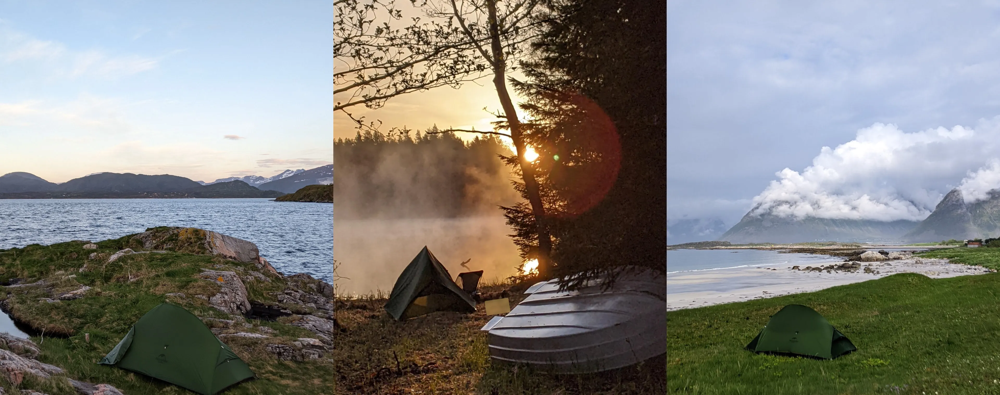
Wildcamp setup cost
It was my first time wildcamping anywhere so I had to buy all of the equipment upfront, further adding to the cost. The total cost of the setup below was €468. I figured, with the cheapest accommodation costing around €45 per night, if I camp 10 nights, I have recouped the cost and every night afterwards is free.
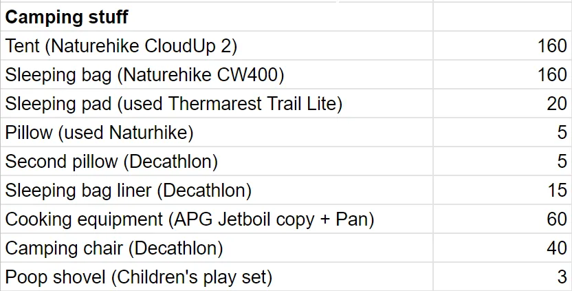
I ended up wildcamping 25 times in Norway, so just about half my nights were spent in the tent. With the average price for accommodation I calculated below I saved €900. If you account for the price of the wildcamp setup, it's still an impressive €432 euros saved and my gear will pay dividend in the future if I take care of it.
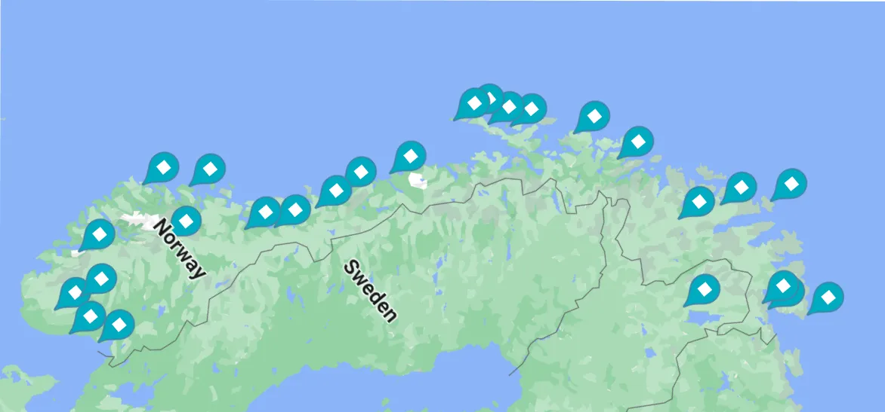
How about when it rains?
Since I started in early May, my time in the Western Fjords was quite cold and rainy. And sometimes you just need a shower, WiFi and a roof over your head. Especially when your wildcamp gear got drenched the night before and there was no opportunity to dry it out.
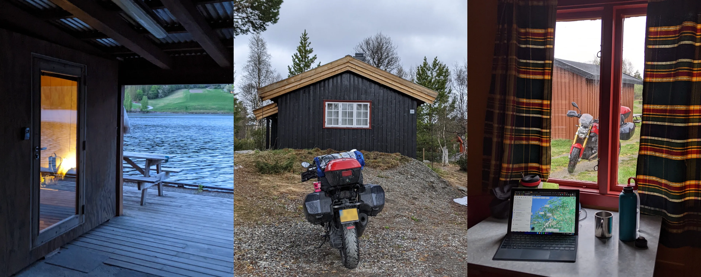
This is when the hytteparks in campings come in handy. It's the cheapest form of accommodation I found and except for a few times when I got a cheap room or the occasional hotel room I exclusively stayed in these. They are priced per cabin and each cabin can contain anywhere from 2 to 4 beds. There are larger cabins, but if you're going solo there's really no point in renting those. The cheapest hytte I booked was around €25 a night and the most expensive around €60. The cheap one was really shady though. Do bear in mind that you are expected to provide your own bedding. I had my sleeping bag and pillow, so this was no problem. You can rent bed linens for an extra 5 or 10 euros in most cases. You're also expected to clean up after yourself and if you don't you can get hit with yet another extra charge.
I did stay in a hostel dormitory once on Lofoten as it was the only "affordable" option at €40 euros a night and it was pouring down that evening. Couldn't sleep because of snoring and caught a cold. Never again, it's just not worth it. Private rooms in hostels would have been very nice, but they are typically more expensive than the hyttes. And one time I couldn't find a suitable wildcamp site by late evening and ended up staying in a camping. It was a nice experience because I got to shower, use the kitchen and the TV room for some badly needed WiFi. It cost me €20 euros or so.
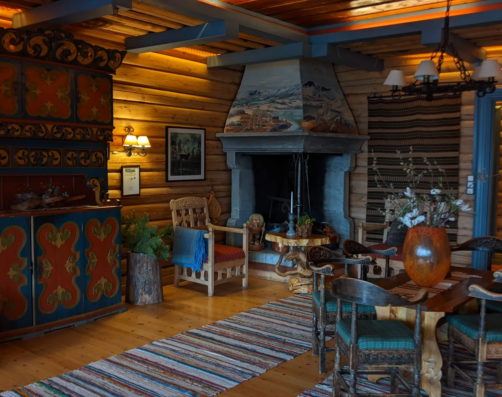
One time I splurged on a nice hotel as well. The historic Grotli Høyfjellshotell which set me back €100 but provided me with nice reading nooks in the evening and a decent buffet breakfast in the morning. This price is sadly on the lower end of the hotel spectrum, so if you'd stay in places like this, it'll add up quickly.
Overall I spent €343 for 13 nights in May and €269 for 4 nights in June. That comes out to €36 per night. Not too shabby to be honest, this is roughly how much I stay for in the Alps as well. These were the absolute cheapest places though, often without running water and WiFi and I had to look for these hard.
Small disclaimer, my friend Gergő in Oslo hosted me for a few days free of charge, so that skews my accommodation costs a bit. So here's a pro tip: have friends all over Norway and you won't pay a dime.
Food and such
Eating out in Norway is prohibitively expensive. It's not unusual to see a shady döner go for €15. Basically anything that requires preparation will be pricy. Okay, so eating out is off the table (for the most part), what can you do to not go hungry? And how to get good coffee, especially in the middle of nowhere?
I chose to carry a substantial amount of cooking gear. Now this doesn't mean that I cooked every meal, far from it. But it provided me the opportunity to whip up a quick oatmeal for breakfast and if I felt like having a slower evening, get some groceries to cook. Store brand stakes were awesome. I ate plenty of cold meals as well, like some bread with canned fish and such. Also, knäckebröd with smoked salmon is a staple I was all too happy to adopt.
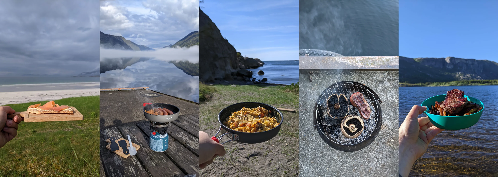
This brings us to groceries. The most affordable places to shop are REMA 1000 and Kiwi. These are easiest to come by in larger cities though. Coop is expensive, but more available in smaller places. Extra is good if you go for their store brand offerings. They have the mythical €10 half kilo smoked salmon that I sadly never managed to find. I stopped at least 8 times at an Extra to get it and every time it was sold out. In total over the trip I spent €336 on groceries.
I like coffee. Maybe even a bit too much. My setup allowed me to prepare delicious coffee anytime I wished, be it in the morning, or when I found a nice scenic spot to pull over for a rest stop. My setup consists of an Aeropress, a double walled metal mug and my APG Jetboil copy. I skimped on getting a hand grinder, so I asked the coffee place where I got my beans to grind it up for me. Having the method to boil water quickly made it all too easy to use my thermos with a tea immersion bit to make some tea to warm up in the evening.
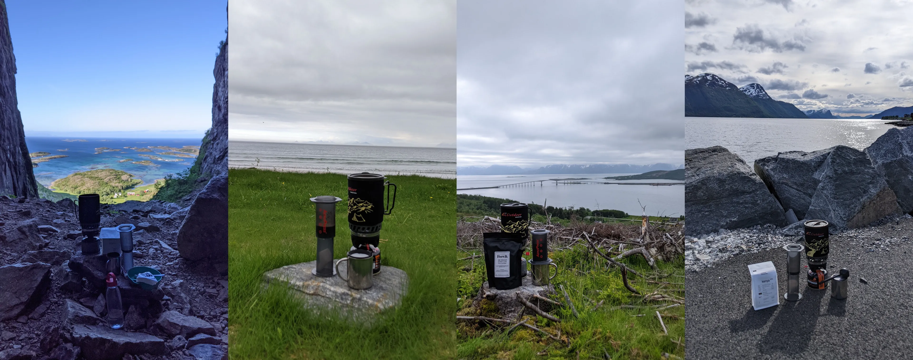
Of course, sometimes it's nice to treat yourself to a meal. Especially if it's some kind of local speciality that you couldn't try otherwise. I had to try reindeer meat for example. Got to taste it in the form of a gyros that cost €18 in a small diner in a village. Had to try the stockfish too, paid €30 in a slightly above average restaurant. And of course, had to try the king crab up north. This was pricy, I paid around €65 euros for the privilege. I consoled myself that because I slept in a tent that night, it helped me recoup the cost. On top of this, there was the occasional burger, fries, snacks, sweets, waffles and such, non-fancy treats along the way. And for me, it's also good coffee. Whenever in a city, I looked for specialty cafes and had my fill of double espressos. A doppio will run you around €3.5 and a bag of freshly roasted beans around €18. Overall, I spent €709 on eating out. The highest category of expense after fuel, even with all my frugality.
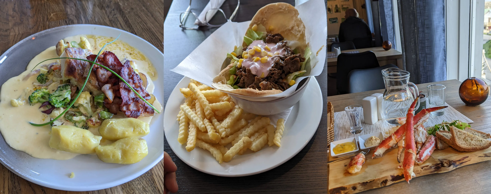
And let's not forget about the one meal I am not proud to admit how many times I ate. Yes, it's the Circle K pølse deal. You get two cheapo hotdogs for €3 with your choice of condiment. They are not very tasty, but they are warm, readily available on the road and affordable. I have to say I had them for lunch a bit too many times. 11 times to be precise.
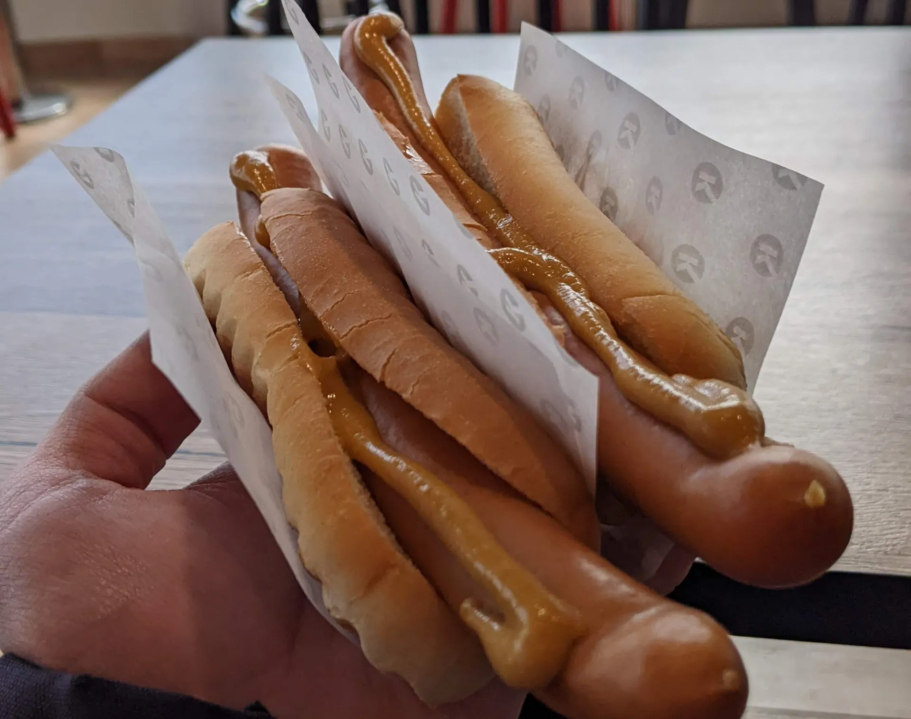
Are ferries really that expensive?
One thing you have to factor into your budget planning are ferries. The topic is so infamous that Thomas Hansen made two videos about it. In short, you'll have to create a FerryPay account and the rest is handled automatically. They read your license plate when you board a ferry and you pay a few days later via the card you connected to your account. However, do check the charges as there were quite a few times when I got charged the car fee, which is much higher than the motorcycle fee, especially on longer ferries, like the Bodø and Å one. Annoying, but after I wrote to FerryPay's customer service, I got a refund fairly quickly.
Overall I spent €98.8 on 16 ferries.
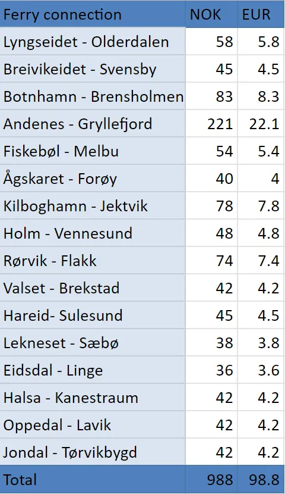
Yes, you can theoretically register for AutoPass, deposit money into your account and then you could get a 50% discount on ferries. As Thomas explains, this is not very straightforward for people outside of Norway so I didn't bother. In hindsight, I could have saved almost €50, not a huge amount, but could have almost had one more king crab plate.
There's one more ferry that was relevant for my trip. The one to get to Norway. I took the renewed ferry service from Eemshaven in the Netherlands to Kristiansand in the South. It was a proper overnight cruiseferry and I booked a cabin with a sea view as well. Also got dinner and a buffet breakfast. The privilege cost me €292.
What about fuel and servicing?
Fuel, you need it. And the more you twist the throttle, the more you'll need. This is a part that's hard to skimp on. You'd think such a big oil producer would have moderate prices, but petrol in Norway is not cheap, far from it.
Here's a chart on petrol prices during my trip:
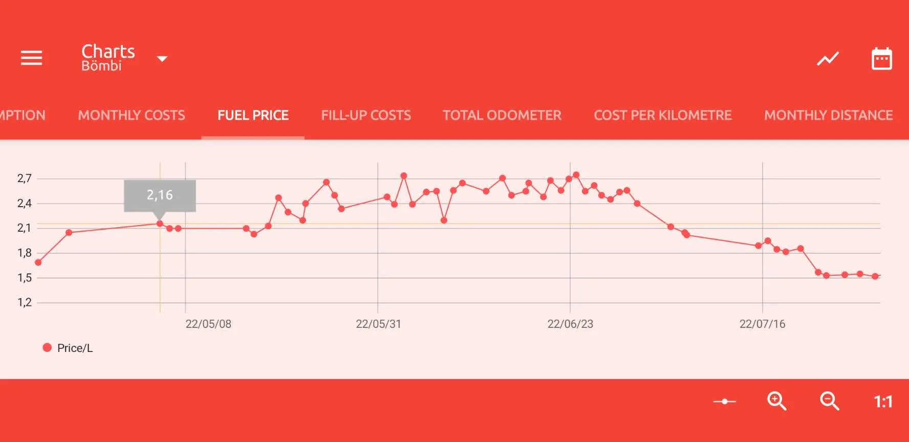
Yes, there were times when petrol cost €2.7 per litre. Luckily, with the heavy handed speed limits, it's easy to drive economically in Norway. My average consumption during the trip was a surprisingly low 4.3 litres per 100 Kms. So with 8823 Kms, that's 380 litres of petrol burned. With an average cost of around €2.4, that comes out to roughly €910 spent on petrol. That's a lot of money to burn, but what a pleasure it was to burn it on those gorgeous roads.
Servicing
I had to stop two times in Norway to get some minor servicing done. First my side stand sensor gave up and lit up the check engine light. I initially thought it was due to a low oil level though and my oil level indicator did come up once on an incline. I stopped by the BMW dealership in Ålesund and got the bike hooked up to the diagnostic computer and got the oil topped up. Cost me €83. I knew what the problem was now, but it didn't fix my side stand sensor. No biggie, I rode the rest of the way with a faulty sensor and peace of mind knowing it's not something more serious.
The second service was swapping the break pads as the factory ones wore out. I was prepared for this eventuality and had a set of pads with me (two for the front, one for the rear) so I only had to swap them. I considered doing it myself since I had the tools and swapped pads before but in the end decided to go to MC Garasjen in Bodø. The swap cost me €120.
Tyre wear
I knew that Norway's roads are rougher than those in mainland Europe, but I didn't expect this much more tyre wear. I set out on the trip with a fairly fresh set of Michelin Road 6 GTs and the rear tyre squared off badly after only 11k kilometres. Now I don't know if it was the loaded bike, the road conditions or it was somehow a faulty batch, but this mileage is just terrible for the Road series. I had to change it in Finland and it cost me €350 in Oulu. Your mileage may very (hehe), but you might want to factor in excessive tyre wear when calculating your expenses.
Museums
Okay, you slept, ate, burned fuel, took ferries, what more should you budget for? When it comes to the way I travel, it's museums. And I do not skimp on museums.
Museums go for anywhere between €8 and €20 euros. I spent €276 for 20 museums, making the average price €13.8.
In conclusion
After adding everything up, this is what I arrived at:
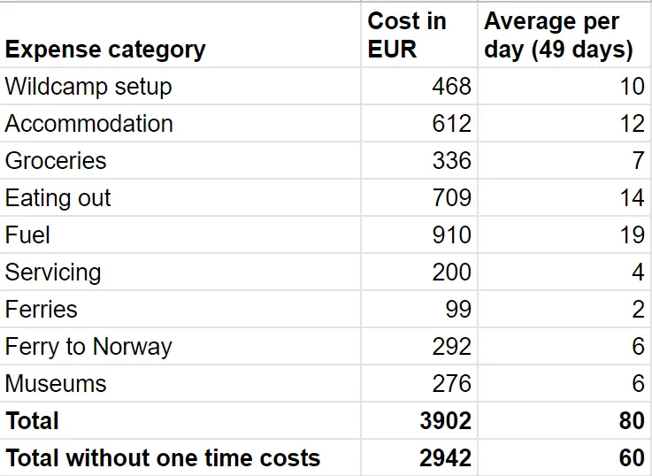
If you don't count the need to buy wildcamping equipment and don't factor in servicing and get to Norway on your own, the €60 per day expenses is really not too shabby. I can easily spend this much per day zipping around Europe. So that my expenses came out like this for Norway is surprising. I did try to keep things very frugal though. However, I didn't keep the good things from myself. Other than accommodation and splurging on restaurants, I don't think I overdid the penny pinching.
This is as much of a surprise to me as it is to you as I didn't keep tabs on my expenses during the trip and only did the math now, after the fact. Unless I missed something crucial, I consider the above a fairly accurate account of my Norway motocamping trip expenses.
How does this sound to you? What could I have done better or differently? Does this make a Norway trip less financially scary? Leave a comment down below.